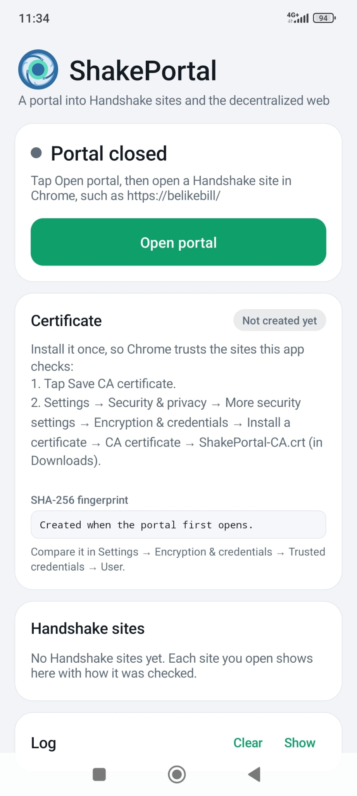
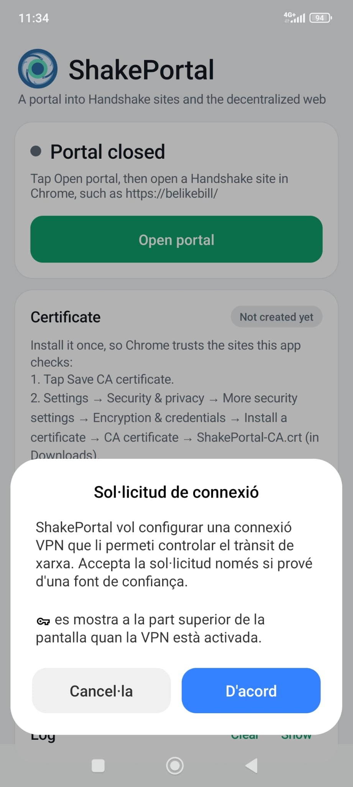
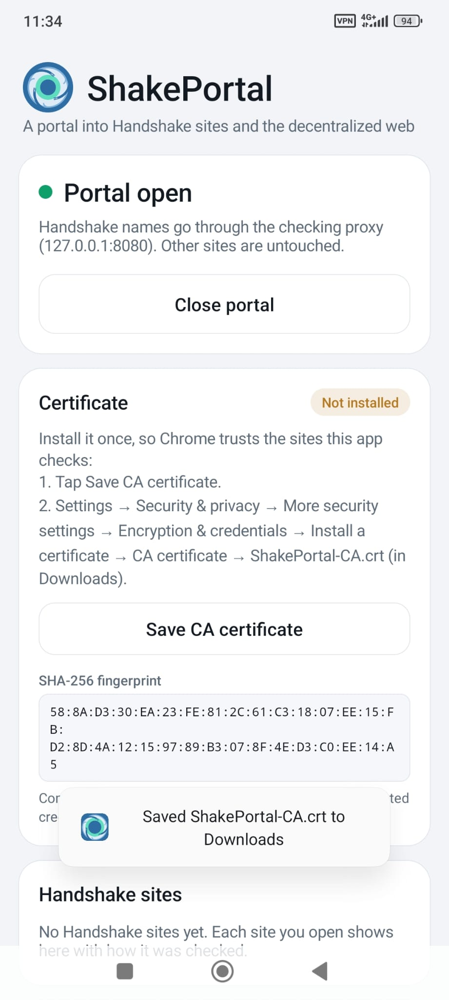
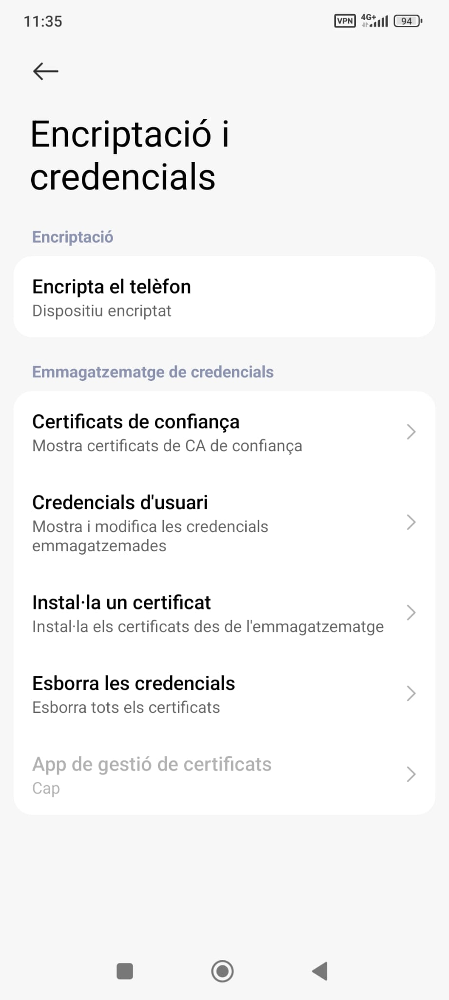
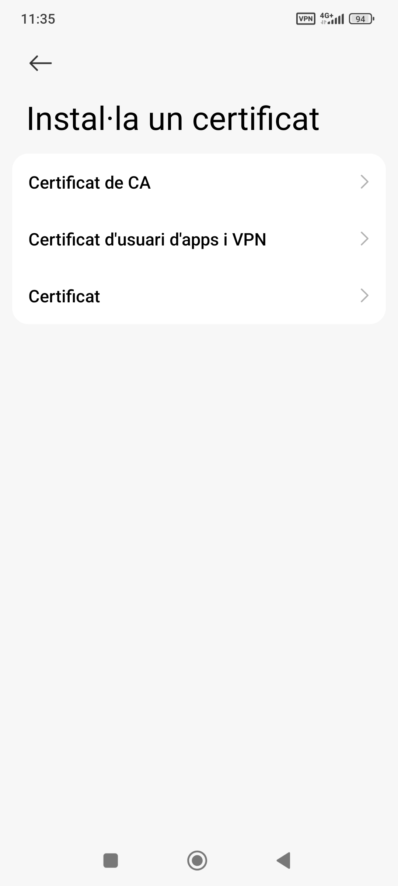
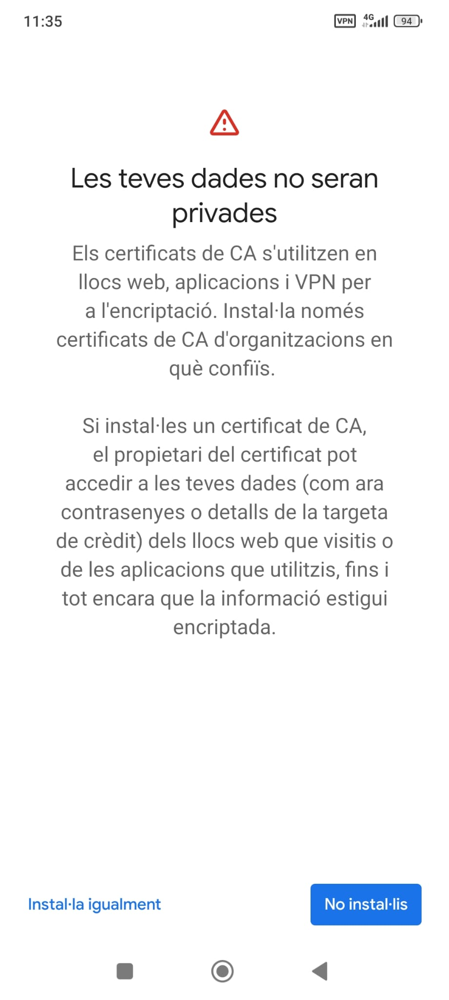
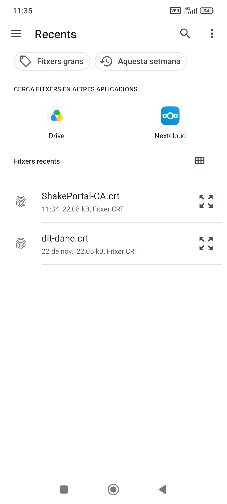
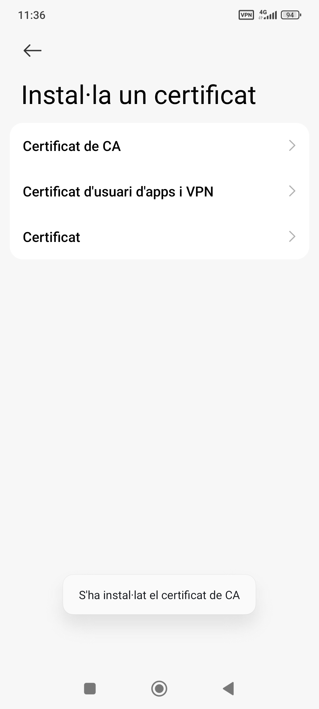
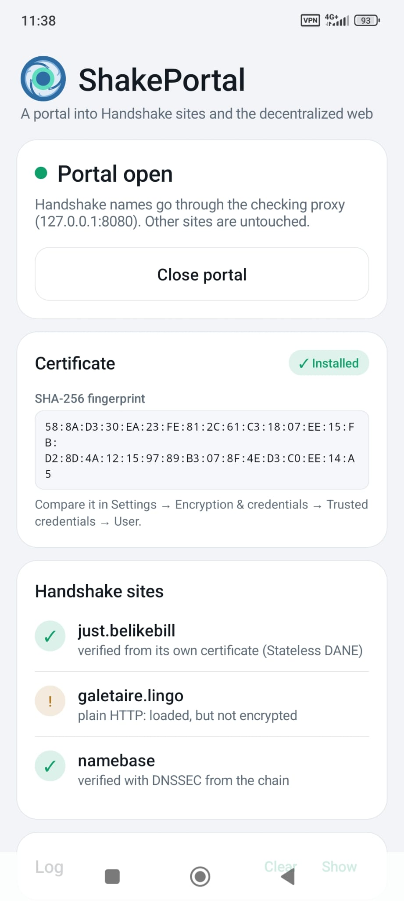
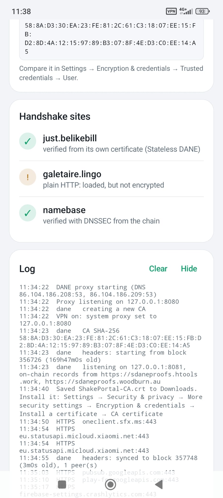

ShakePortal is an Android resolver for Handshake names. A VPN sets a DANE system proxy (built on letsdane) that proves the site's TLSA record itself.
Note: ShakePortal works as a VPN that only sets a proxy for the phone (it routes no traffic). Ordinary sites go straight out as before. Handshake sites go to a checking proxy inside the app, which re-signs them with a local certificate authority you install once.
.apk, available on the GitHub releases page and on Zapstore.Once you've downloaded the .apk file, install it on your Android phone. Your phone will warn you that the app comes from an unknown source. You can let it scan the app and then go through the warnings. When the app appears on your home screen, open it and complete the one-time setup.
The first time you tap Open portal, the app will ask for permission to run it as a VPN. The resolver has to work as a VPN, so accept. Next, install the certificate that lets your browser verify Handshake sites securely. Tap Save CA certificate to download it, then go to the CA certificate section in your phone's settings. The exact path depends on the phone brand (on many phones it's Settings → Security → Encryption & credentials → Install a certificate → CA certificate). Once you've found it, install the ShakePortal-CA.crt file as a CA certificate. After that, ShakePortal is fully set up and you can start browsing Handshake sites.
The app also has a section that lists every Handshake site you've visited and how each one was validated, plus a log of all the traffic that goes through the proxy. Keep in mind that your browsers can only resolve Handshake names while the app is running and the portal is open. Closing the app stops the VPN, and with it, resolution.

1 Open ShakePortal and tap Open portal
2 Allow ShakePortal to set up its VPN connection
3 With the portal open, tap Save CA certificate. It's saved to Downloads
4 In your phone's settings, open Encryption & credentials → Install a certificate
5 Choose CA certificate
6 Android warns you about CA certificates. Tap Install anyway
7 PickShakePortal-CA.crt from your recent files

8 The CA certificate is installed
9 ShakePortal shows the certificate as installed and lists every Handshake site you open, with how it was verified
10 The log shows every connection that goes through the proxyThe previous setup works automatically in Chrome and may work in other browsers, depending on the browser. In Firefox, for example, you need to turn on Use third party CA certificates in Firefox's secret settings. To unlock them, go to Settings → About Firefox and tap the Firefox logo five times. Firefox will then trust the certificate you installed in your Android settings, and Handshake sites will resolve without problems.
ShakePortal isn't on the Google Play Store yet. Publishing it there is the goal, but it might take a while. For now, you can download it from the GitHub releases page or get it from Zapstore, an alternative app store that makes publishing apps much easier. The app is signed with my Nostr key, which you can verify, and if you install it through Zapstore, you can update it from there instead of downloading the .apk file every time a new release comes out.